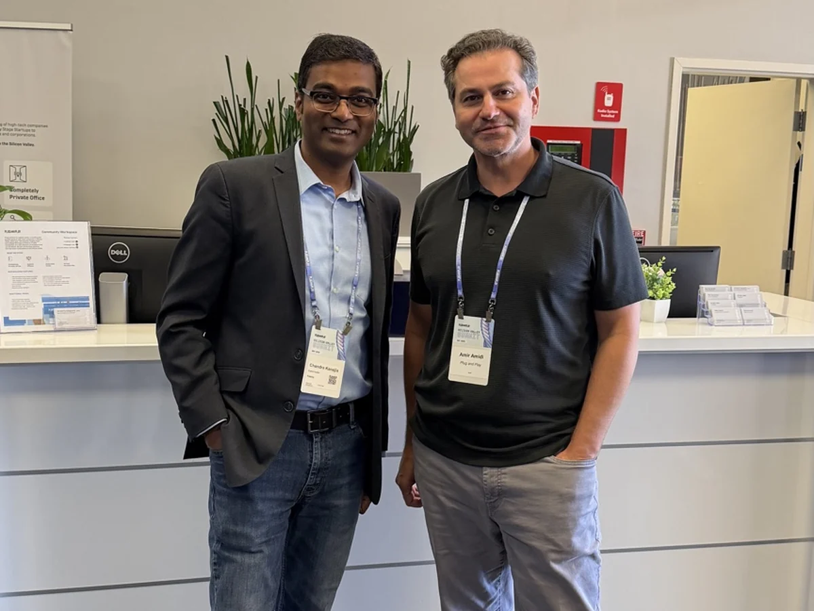

Work before tools
Start with the economic and operational constraint, then decide where AI belongs.
POINT OF VIEW
The enterprise opportunity is not to add intelligence around the edges. It is to redesign how decisions are made, how work moves, where human judgment belongs, and how value is measured.

FOUR OPERATING PRINCIPLES
Start with the economic and operational constraint, then decide where AI belongs.
AI needs trusted data, workflow context, and evidence to act responsibly.
Governance is part of the product, not a review gate at the end.
Value appears only when roles, incentives, decisions, and habits change with the technology.
FEATURED ARGUMENT
The operating model is the product.
As AI moves from assistance toward execution, the difficult questions shift from model capability to management design: who owns the outcome, what the system may decide, what evidence it must retain, when a person intervenes, and how the economics of work change.
THOUGHT-LEADERSHIP TERRITORIES
How leaders identify and shift the constraint that limits the next unit of value.
How authority, evidence, escalation, and accountability are designed around AI action.
Why enterprise data must carry meaning, ownership, and evidence into the workflow.
How platforms move from recording work to improving how work moves.
SELECTED CONVERSATIONS AND STAGES
Selected public conversations that show the range of Chandra’s thinking without turning the site into a speaking résumé.
A perspective on how voice and AI can make customer interactions faster, more contextual, and more natural while supporting secure service through voice biometrics and device context.
Hosted Raja Rajamannar, CMO of Mastercard, for the IIM Bangalore Educational Foundation’s Quantum Marketing Summit.
View source ↗Delivered a keynote on digital cooperation at the fifth Integrity & Ethics Conclave organized by Symbiosis Centre for Information Technology.
View official report ↗Spoke on Digital Transformation for Sustainable Innovations, drawing on global examples of ecosystems supporting sustainable business and the circular economy.
View source ↗Led a discussion with Grade 10 students on the forces reshaping healthcare and the importance of asking better questions.
View source ↗EXECUTIVE BRIEFINGS
Field Notes turn the operating thesis into substantive, buyer-relevant essays.